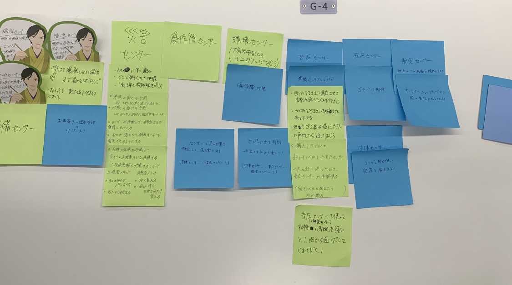
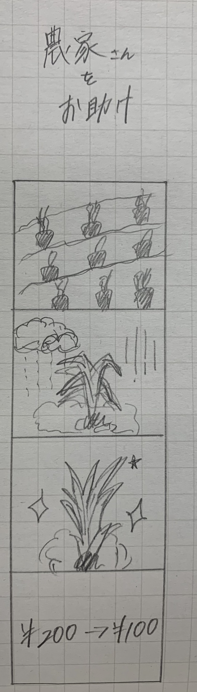

𝐴𝑠𝑠𝑖𝑔𝑛𝑚𝑒𝑛𝑡:
IoTに関して：データを集めることで、何ができるか？に関して
1.グループワークした内容

2.自分で考えたアイディア
農家さんお助け！
梅雨の時期に限らず、異常気象や気候変動によって大切に育てている野菜等が犠牲になってしまう、、、。
そんな時にいち早く気象レーダーを使うことで、自動でビニールシートなどで野菜たちを守れるのではないかと考えました。
＜生産者のメリット＞
・安定した収入が得られる
・日々大切に育てた野菜が犠牲にならず消費者のもとに届く
＜消費者のメリット＞
・野菜高騰に影響されない
・欲しい時に適切な量で購入できる
